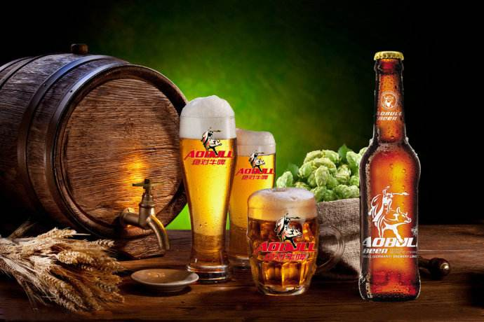
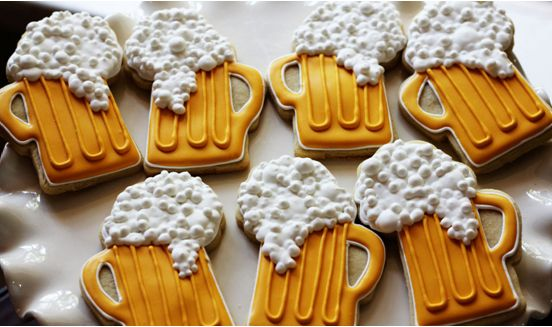

关于啤酒
啤酒是人类最古老的酒精饮料之一，是水和茶之后世界上消耗量排名第三的饮料。啤酒于二十世纪初传入中国，属外来酒种。啤酒是根据英语Beer译成中文“啤”，称其为“啤酒”，沿用至今。
啤酒以大麦芽、酒花、水为主要原料，经酵母发酵作用酿制而成的饱含二氧化碳的低酒精度酒，被称为“液体面包”，是一种低浓度酒精饮料。啤酒乙醇含量最少、故喝啤酒不但不易醉人伤身、少量饮用反而对身体健康有益处。现在国际上的啤酒大部分均添加辅助原料。
有的国家规定辅助原料的用量总计不超过麦芽用量的50%。在德国，除出口啤酒外，德国国内销售啤酒一概不使用辅助原料。在2009年，亚洲的啤酒产量约5867万千升，首次超越欧洲，成为全球最大的啤酒生产地。
在中国北方米家崖考古遗址发现的陶器中保存着大约5000年前的啤酒成分考古学家在陶制漏斗和广口陶罐中发现的黄色残留物表明，在一起发酵的多种成分包括，黍米、大麦、薏米和块茎作物。
德国啤酒文化

就像瓷器使人联想到中国、樱花使人想到日本、牛仔使人想到美国一样，啤酒让人想到的是德国。德国是世界上啤酒消耗量最大的国家，德国人酷爱喝啤酒，因此德国形成了一种特殊的“啤酒文化”——有悠久的历史、古老的传说和各式酿制方法，还有专属的节庆和舞蹈。
啤酒之乡巴伐利亚
在德国最著名的啤酒之乡巴伐利亚，啤酒存在的历史几乎和当地的历史一样悠久，可以追溯到公元前的古罗马时代。人们在巴伐利亚北部的库姆巴赫发现了一些有将近3000年历史的盛啤酒容器。
由于巴戊利亚啤酒的历史与当地文化紧密相联，因此啤酒也和天主教息息相关。在阿尔卑斯山北麓上，有条山径直通最原始的巴伐利亚“啤酒天堂”——修士自行酿造黑啤酒的安蝶斯修道院。这里每年吸引着大批游客前来朝圣。在慕尼黑有座“奥古斯丁”(Augustiner)啤酒厂，酒厂的名字也让人们联想到宗教改革领袖马丁•路德所属的奥古斯丁修士团。据说，由于当时每年复活节前6周的四旬斋期间，修士们不能吃肉，他们便任由“大麦汁”自然发酵，最终生成了一种高酒精度的饮料，并将它作为四旬斋餐饮的代替品。为了使教廷准许他们饮用这种美味的饮料，修士们便送了一桶给教皇，教皇品尝后为之倾倒，表示这种饮料可作为“四旬斋餐饮的代替品”及“罪恶的洗涤剂”，并准许巴伐利亚的修道院酿造之。这种美味的饮料便是啤酒，据说啤酒的酿造技术就是这样诞生的。
在德国，有种“啤酒与巴伐利亚”的说法，因为世界上再没有哪个地方的啤酒消耗量可以媲美巴伐利亚。巴伐利亚有1100万居民，每个人的年平均啤酒消耗量为230升，换句话说，每个巴伐利亚人(无论男女老少)每天要喝半升啤酒。因此，许多人说“喝啤酒是德国人‘最爱的休闲活动’，而巴伐利亚人是个中翘楚。”
巴伐利亚北部有种举世无双的“石头啤酒”。酿造这种啤酒必须将重约400公斤的石头放在山毛榉堆上烤，而且温度须高达1200℃。然后把烤得红热的石头放进煮沸釜中。石头的高温使麦芽糖迅速转变为焦糖，紧紧粘附在石头上，之后再把石头放进发酵槽中，迅速冷却的焦糖再次溶解，如此便使青啤酒中含有一种特殊的烟熏味了。
规模最大的啤酒节
由于德国人将喝酒视为每天的“必修课”，各种酒馆、酒屋、小客栈便多似天上的星星。仅人口100万的慕尼黑就有3000多个每天都座无虚席的啤酒馆。几乎每个踏进酒馆的人至少都点半升啤酒佐餐(最受欢迎的是“比尔森”啤酒)，但人们最常点的还是一升。所以“一升”在慕尼黑及整个巴伐利亚可说是个“计量单位”，当地还盛行一谚语“有节制地一天喝一升，健康赛神仙”。人们也不只是进餐时才喝酒，几乎是随时随地喝。德国各地几乎都有“啤酒公园”，只要太阳一露脸，人们就蜂拥至啤酒公园，尽情享受一下大自然。
慕尼黑一向是公认的“啤酒之都”，每年秋季都会举行世界上规模最大的啤酒节——十月庆典。来自世界各地的观光客纷至沓来，涌向慕尼黑，一品“巴伐利亚啤酒”，并亲身体验德国人民欢庆节日的热闹和喜悦。其实，早从公元1517年起，德国每隔7年就会在慕尼黑举行一场“桶匠之舞”。这种花式舞蹈是由18人共同演出，他们不断舞动桶箍，并把它们弄成王冠，在黑死病终止蔓延的年代，这些桶匠就是第一批通过欢乐的舞蹈而重燃希望之火的灾民。而制造啤酒桶的这种职业，对整个啤酒业和饮酒者都是不可或缺的。不过，由于清洁大木桶的工作不仅费事又昂贵，所以如今仅剩下少数酿酒厂遵循古老的习惯将啤酒装进大木桶中。桶装啤酒的味道最是香醇。但真正的桶装啤酒只有小酒厂才会有，其他在各大城市及民俗节中见到的木桶都是假的，只用来装饰而已。
慕尼黑每年的二三月份还举行著名的“四旬斋节”。每到这时，德国最重要的政治人物汇聚在山城“Nockher-Berg”测试巴伐利亚四旬斋啤酒的品质。过去的测试是这样的：一些“达官贵人”身着皮裤坐在木板凳上，然后开始畅饮新鲜啤酒，并在凳子上坐半个小时，等他们起身时，木板必须能够贴着他们的皮裤，才表示啤酒真正通过了测试，不然就表示这种啤酒浓度太低，没有资格成为“真正的四旬斋啤酒”。
今天，政治人物仍在波克啤酒与音乐相伴下见面，仪式与前却有不同：政治人物聚集之后便举行开桶仪式(即将第一桶啤酒开封)，好让那些挑剔的嘴尝过点评过。艺术家与演员也获准参与这项仪式，他们可以用幽默机智的方式公开谴责政治人物的恶行，甚至公然揭露这些政治人物的“真面目”。这种活跃、充满嘲讽的“政治大游行”真算得上是世界独一无二的戏剧演出，这都是啤酒节的功劳。另外，在斯图加特、科隆、多特蒙德等地，也有啤酒节举行，热闹非凡。
始终渗透于德国文化之
北欧以前的传统是由女性酿造啤酒的，那些女性就是传说中的“女武神”(北欧神话中决定谁该阵亡并将阵亡将士引至英烈祠的女神)，她们酿造出的酒被视为“不死之水”。这种习俗也流传到了德国北部，年轻女人出嫁时会带着不同的酿造嚣具到夫家。这种传统直到公元８世纪葡萄酒文化的涌入才有所改变。由于德国地处北欧，气候严寒，啤酒不仅可以御寒，还跟洋葱一样被当成药物，用来医治坏血病，加上严寒不能种植葡萄，啤酒便成了德国的饮料之王。
德国人都以自己的啤酒文化的精纯而自豪，这是有史可考的。公元1516年，巴伐利亚公爵威廉四世为了保持啤酒的精纯，编纂了一部严苛的法典“精纯戒律”，明确规定只能用大麦(以及后来的大麦芽汁)、水及啤酒花生产啤酒，这是人类历史上最古老的食品法律文献。
19世纪工业革命开始后，蒸汽机的出现大大提高了啤酒的产量，冷却器的发明使啤酒可以整年贮存，铁路、海运、航空运输的开拓和发展，使啤酒在更短时间内运往世界各地，复杂的电子设备完成配制、酿造过程，而不再靠人的“灵魂和感觉”了，这使啤酒的品质更加稳定，品种更加多样。
啤酒中含有许多有价值的矿物质和维生素，其低酒精度和高二氧化碳也有助于放松身体，同时能冲刷掉对身体有害的物质，洗净肾脏等。德国人对啤酒的狂热很大部分的原因应该是缘于此。啤酒，从历史走向未来，将一直渗透德国文化中，成为它的一部分。
中国三大啤酒节：

哈尔滨啤酒节
哈尔滨啤酒节每年7月份举办，哈尔滨是中国第一桶啤酒的生产地。哈尔滨素有“东方莫斯科”、“东方小巴黎”、“音乐之都”之誉。1988年夏，哈尔滨啤酒节同首届国际啤酒博览会同时问世。啤酒作为文化载体，在哈尔滨成为人们社会交往、信息沟通、商品流通的文化纽带。
大连国际啤酒节
大连国际啤酒节(Dalian International Beer Festival)，由中国轻工业联合会与大连市人民政府共同主办。是国内外知名啤酒品牌云集的行业盛会，是国内规模最大、参节酒商最多、啤酒品牌最全的国家级啤酒节，是国际知名的节庆活动，享有“东方慕尼黑”盛誉。参节酒商来自国内及德国、美国、俄罗斯、捷克、韩国、日本、台湾等国家和地区，每年有30余家中外啤酒集团携带400余个品牌进行展示，全程吸引200余万海内外游客尽享美酒盛宴。
青岛啤酒节
青岛国际啤酒节始创于1991年，每年在青岛的黄金旅游季节8月的第二个周末开幕，为期16天。节日由国家有关部委和青岛市人民政府共同主办，是融旅游、文化、体育、经贸于一体的国家级节庆活动。
青岛啤酒节始创于1991年，最初是由青岛啤酒厂主办，后由青岛市人民政府组建专门的机构主办，该活动是以啤酒为媒介，集融旅游休闲、文化娱乐、经贸展示于一体的大型节庆活动，每年八月的第二个周末在青岛开幕，为期15天，是国内规模最大的酒类狂欢活动，在国内外具有较广泛的知名度和影响力，被誉为亚洲最大的啤酒盛会。
无论是哪里，青岛啤酒节都是当地市民的节日：万人空巷、满城酒香，节日的城市，到处都弥漫着欢乐的气氛。不分国籍、不分肤色、不分文化背景，同享激情。同时，每年的青岛啤酒节也会对当地城市的旅游、食宿、购物、交通、会展等行业产生强劲的拉动作用，让每一位参与其中的人都深刻的感受到了啤酒所带给大众的激情与快乐，让整个世界一同与青岛啤酒狂欢！